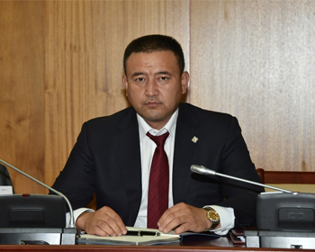
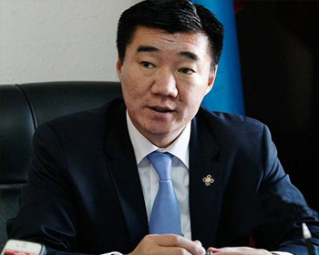
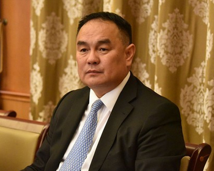
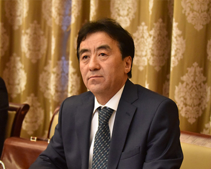

The Ministers

Minister for Finance of Mongolia
CHOIJILSUREN Bayartogtokh
CHOIJILSUREN Bayartogtokh
S.Danzangiin gudamj 5/1
Zasgiin gazriin II bair
Ulaanbaatar-15160, Mongolia
Phone: +976-11-267468
http://mof.gov.mn

Minister for Justice and Internal Affairs of Mongolia
BYAMBATSOGT Sandag
BYAMBATSOGT Sandag
Government building V
Khudaldaanii street 6/1, Chingeltei district
Ulaanbaatar, Mongolia
Phone: 976-51-267533
Fax: 976-51-267533
http://moj.gov.mn

Minister of Food, Agriculture, Light Industry
SERGELEN Purev
SERGELEN Purev
Government Building II
United Nations Street 5/2
Chingeltei district
Ulaanbaatar, Mongolia
Phone: 976-51-263333
Fax: 976-51-263333
http://www.mofa.gov.mn/

Minister for Construction and Urban Development of Mongolia
MUNKHBAYAR Gombosuren
MUNKHBAYAR Gombosuren
Government building XII
Builders Square-3
Ulaanbaatar 15170, Mongolia
Phone:+976-11-327716
Fax: +976-11-322904
http://mcud.gov.mn